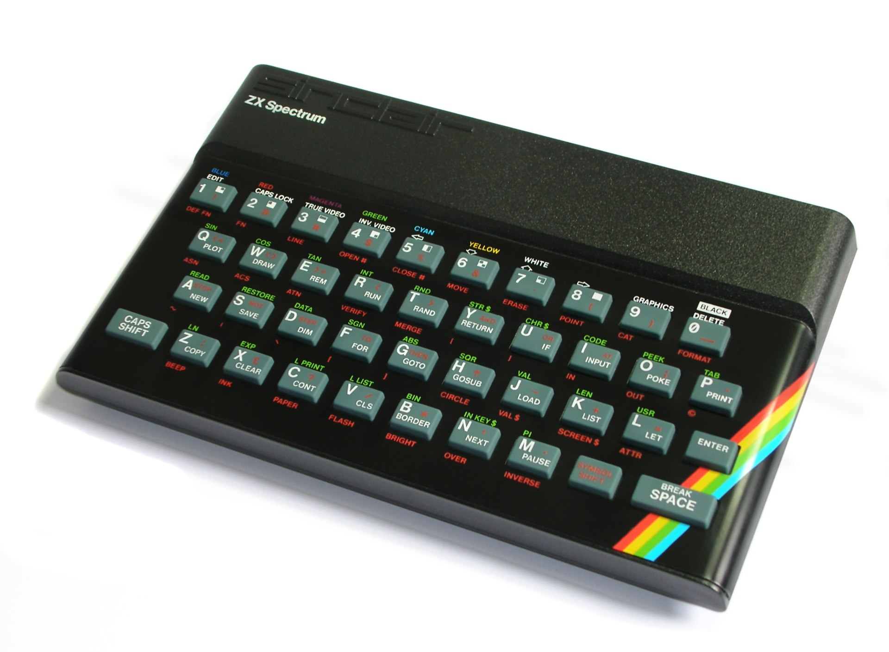

Doing a lot with a little
The ZX Spectrum played a big part in my childhood, swallowing up whole chunks of time - hours days weeks at a time - both through gaming, and painstaking programming in assembly language to create incredibly primitive games.
As I got older, and became an electronics engineer, this humble little home computer from the 1980’s amazed me over and over as I learned more and more about its inner workings. The functionality that the ZX Spectrum’s creators squeezed out of such a limited number of transistors, both in terms of CPU and memory, and low clock speed (3.154MHz) is simply astounding.
A pocket calculator has one job - to do maths - and has an incredibly specific and customized microchip “brain” for that sole purpose. The ZX spectrum was a low cost, kid’s home computer made from a general purpose microprocessor and memory chips, where mathematical manipulation had to be handled with extreme guile and care! It’s worth mentioning that the other “beating heart” of the ZX Spectrum is the unsing and mysterious Uncommitted Logic Array (ULA), something documented in a fabulous book by Chris Smith, but the ULA stays well out of this article about the mathematical magic taking place in the ZX Spectrum ROM!
Z80: Putting the “Z” in “ZX”
The digital, integer-number-crunching heart of the the ZX Spectrum is the 8-bit Zilog Z80 microprocessor, or CPU. In terms of the raw mathematical ability, it can:
- add or subtract 8- and 16-bit integers
- multiply or divide 8- or 16-bit integers by powers of 2
and that is pretty much it! No dedicated floating point unit, no hardware multipliers, no maths co-processor.
So the question is, how does such a simple home computer using a CPU with such basic mathematical abilities perform quite precise floating-point trigonometrical functions like sine, and arctangent?
Every byte counts
The Z80 could address 64kB of memory. The ZX Spectrum has 48kB of RAM. In the remaining 16kB, the ZX Specrum had to cram the entire operating system, which included:
- reset/restart tables
- tables of constants e.g. pixel maps for characters.
- keyboard handling of key presses, scanned at 50Hz
- loudspeaker routines to make beeps at precise frequencies
- cassette handling for loading and saving data
- screen and printer output handling
- BASIC interpreter routines
- expression evaluation routines
- arithmetic routines
- floating point calculator
Floating-point numbers in Spectrum-Land
It is worth a brief description of how the ZX Spectrum stored floating point numbers in memory. They were stored using five bytes.
Any number (except 0) can be written uniquely as:
\(\pm mantissa \times 2^{e}\)
In the ZX Spectrum, \(mantissa\) is made up of the four bytes \(m_1\) to \(m_4\), expressed as a fractional integer, as illustrated here using only four bits after the decimal point The ZX Spectrum uses 32 bits.

image_medium
The Spectrum ROM code assumes that the left-most (most-significant) bit of the mantissa would be a one, with a value of 0.5. This allows this bit to be re-purposed to indicate the sign of the number being encoded, with 0 meaning positive, and 1 meaning negative.
The mantissa then represents a number between 0.5 and almost 1 (in fact, about 0.99999999976716936)
The exponent \(e\) in the Spectrum implementation uses one byte to represent an integer exponent in the range -127 to +127, stored by subtracting \(e\) from 128 (hex 80).
These five bytes are stored in the Spectrum memory in this form:
| B1 | B2 | B3 | B4 | B5 |
|---|---|---|---|---|
| \(128-e\) | \(m_1\) | \(m_2\) | \(m_3\) | \(m_4\) |
Floating point example
For example, to represent the number one-tenth in five bytes floating point format, we note that
\(0.1 = (4/5) \times 2^{-3}\)
with an exponent of -3, and a mantissa of \(4/5 = 0.8\), which in fractional binary is:
\((4/5) = (1/2) + (1/4) + (1/32) + (1/64) + (1/512) + (1/1024)...\)
giving a mantissa of
\(.11001100\text{_}11001100\text{_}11001100\text{_}11001100\) in binary, and CC_CC_CC_CC in hexadecimal bytes
Since we want to represent positive one-tenth, the most significant bit of the manitssa (left-most bit of \(m_1\)) is set to zero, so we represent +0.1 in five bytes as:
83_4C_CC_CC_CC
Smallest and largest numbers
Using this system, the ZX Spectrum can represent positive and negative numbers with these extremes:
| Extreme | Hex Form | Value |
|---|---|---|
| smallest positive number | FF00000000 |
2.93873587706e-39 |
| largest positive number | 017FFFFFFF |
1.7014118e+38 |
| smallest negative number | FF80000000 |
5.87747175411e-39 |
| largest negative number | 01FFFFFFFF |
-1.7014118e+38 |
Note that for floating point numbers, the byte B1 representing the exponent cannot take the value 00. This is a reserved marker indicating that a 16-bit signed integer is actually embedded within the 5-byte format as:
| B1 | B2 | B3 | B4 | B5 |
|---|---|---|---|---|
00 |
FF |
\(XX\) | \(YY\) | 00 |
where \(XXYY\) is the two’s complement signed 16-bit integer (i.e. in the range -32768 to +32677)
Note that the exact number zero cannot be represented in this floating point format, since the matissa must always be at least 0.5. Zero is instead represented by an integer padded in the five-byte form as 00FF000000
Supported Functions
So now we know how the ZX stored floating point values using a 5-byte format.
The ZX Spectrum supports the following ten trigonometric and exponential functions:
SIN COS TAN ARCSIN ARCCOS ARCTAN LN EXP SQRT POW
The ARC commands are simply the inverse trig functions. POW is raising one number to the power of another, and is the only binary operator, with the rest unary.
Mathematical Magic #1
Four of these are “fundamental” operators:
EXP LN SIN ARCTAN
The other six operators are defined in terms of these four fundamental operator. Some of these definitions are simple, but some use quite crafty conversions and mathematical identities!
COS \(\pm cos(x) = sin(x \pm \pi/2)\)
TAN \(\pm tan(x) = \large \frac{sin(x)}{\pm cos(x)} = \large \frac {sin(x)}{sin( x \pm \pi/2)}\)
POW \(x^y = e^{ln(x^y)} = e^{y \times ln(x)}\)
SQRT \(\sqrt(x) = x^{0.5} = e^{0.5 \times ln(x)}\)
ARCSIN \(sin^{-1}(x) =2 \times tan^{-1}(\large \frac{x}{\sqrt(1-x^2)})\)
ARCCOS \(cos^{-1}(x) = \pi/2 - sin^{-1}(x)\)
Note that the ARCSIN calculation uses this form of a half-angle trig identity:
\(tan(\large \frac{\theta}{2}) = \large \frac{sin(\theta)}{1+cos(\theta)}\)
and also uses a Pythagorean identity:
\(sin^2(\theta) + cos^2(\theta) = 1\)
rearranged to give
\(cos(\theta) = \sqrt(1-sin^2(\theta))\)
By using only four operators to derive a total of ten, the ZX Spectrum creators were very cleverly able to keep memory usage down, albeit at the cost of slower speed with multiple conversions using existing routines for the four “base” operators.
Where the magic happens: Chebyshev Approximations
We have just seen how the ZX Spectrum handles ten functions for the price of only four. The question is, how does it actually implement these four functions using the simple-minded Z80 CPU and a tiny amount of ROM?
Step forward the Chebyshev Polynomial Series approximation!!
Chebyshev, the man.

Pafnuty Chebyshev was a Russian mathematician and all-round mega-brain that died shortly before the twentieth century. He has over a dozen mathematical and mechanics related equations, relations, functions and mechanisms named after him. Of particular interest in this article are Chebyshev Polynomials, specifically “of the first kind”.
The mathematics get’s a bit heavy, so I’ll leave it as a study exercise for the interested reader. There are some well-written resources in the references at the end of this article. Here, we’ll just stick to how a truncated series of these polynomials can be used to finely approximate functions like EXP, LN, SIN and ARCTAN, allowing the little Speccy to crunch the numbers and allow young programmers like I was to write BASIC programs that drew fractals, circles, ellipses and solve maths homework.
Chebyshev, the polynomials.
In a nut-shell, Chebyshev polynomials are those that fulfill the relation:
\(T_n(x)=cos(ncos^{-1}(x))\)
where \(n=0,1,2,3,...\) and \(T_n(x)\) is the nth “Chebyshev polynomial of the first kind”
The first couple of polynomials are dead easy!
\(T_0(x)=cos(0 \times cos^{-1}(x)) = cos(0) = 1\)
\(T_1(x)=cos(1 \times cos^{-1}(x)) = cos(cos^{-1}(x)) = x\)
From the third polnomial onwards, it gets tricky:
\(T_2(x)=cos(2 \times cos^{-1}(x)) = ?\)
\(T_2(x)=cos(3 \times cos^{-1}(x)) = ?!?\)
But it turns out that there is a recurrence relation that allows you to compute the (n+1)th polynomial, when you already know the nth and (n-1)th, avoiding all the hard work!
\(T_{n+1}(x) = 2\cdot x \cdot T_n(X) - T_{n-1}(x)\)
Since we know \(T_0(x)\) and \(T_1(x)\) already, then:
\(T_2(x)= 2 \times x \times T_1(x) -T_0(x) = 2 \times x \times x - 1 = 2x^2-1\)
and by the same token, we can find \(T_3(x)\) and so on. The first twelve Chebyshev polynomials of the first kind are shown below:
\(T_0(x) = 1 \\ T_1(x) = x \\ T_2(x) = 2x^2 − 1 \\ T_3(x) = 4x^3 − 3x \\ T_4(x) = 8x^4 − 8x^2 + 1 \\ T_5(x) = 16x^5 − 20x^3 + 5x \\ T_6(x) = 32x^6 − 48x^4 + 18x^2 − 1 \\ T_7(x) = 64x^7 − 112x^5 + 56x^3 − 7x \\ T_8(x) = 128x^8 − 256x^6 + 160x^4 − 32x^12 + 1 \\ T_9(x) = 256x^9 − 576x^7 + 432x^5 − 120x^3 + 9x \\ T_{10}(x) = 512x^{10} − 1280x^8 + 1120x^6 − 400x^4 + 50x^2 − 1 \\ T_{11}(x) = 1024x^{11} − 2816x^9 + 2816x^7 − 1232x^5 + 220x^3 − 11x\)
The first five polynomials look like this:

These polynomials have many interesting properties, but what we care about is that over the range \(-1 \leq x \leq +1\), we can very closely approximate some other function as a linear combination of the first few Chebyshev polynomials.
To put this another way, by adding together certain scaled “amounts” of the first few polynomials, we get an overall function that looks a lot like, say, the SIN function for example. To express this mathematically:
\(f(x) \approx \sum_{n=0}^{n=k}A_nT_n(x)\)
where \(A_n\) is a simple scalar coefficient that “scales” how much of each \(T_n(x)\) to add together.
This is very much like Fourier synthesis, in which any repetitive waveform can be “built up” from various differing amounts of harmonically related single frequencies.
In our case, we want \(f(x)=sin(x)\), and since we know what each \(T_n(x)\), up to \(n=11\) in the above list, then if only we could find out what each number \(A_n\) is, then we could approximate SIN as some simple sum of say the first \(k+1\) polynomials, i.e.:
\(sin(x) \approx A_0T_0(x) + ... + A_kT_k(x)\)
Since each \(T_n(x)\) is just some polynomial in powers of x, we can add up all the “amounts” of each power of x, and end up with coefficients, say \(a\):
\(sin(x) \approx a_0 \cdot x^0 + a_1 \cdot x^1 + a_2 \cdot x^2 + .... + a_k \cdot x^k = a_0 + a_1x + a_2x^2 + .... + a_kx^k\)
Going back a step, again, skipping the derivations which you can find else where, the coefficients \(A_n\) can be found using:
\(A_0 = \large \frac{1}{\pi} \int_{-1}^{+1} \large \frac{f(x)dx}{\sqrt(1-x^2)}\)
and for \(n=1,2,3...k\) as
\(A_n = \large \frac{2}{\pi}\int_{-1}^{1} \large \frac{f(x)T_n(x)dx}{\sqrt(1-x^2)}\)
Scaling in \(x\)
Before we get carried away and launch in to some number crunching, we have to bear in mind that the approximations above work only over the range \(-1 \leq x \leq +1\). Outside this, the approximation fall apart, and the sum of polynomials will not “follow” or mimic our chosen funtion \(f(x)\) anymore.
Scaling to the rescue! For our chosen SIN function, we can compress the full range of SIN from say \(-\pi/2 \leq x \leq \pi/2\) to our desired \(-1 \leq x' \leq +1\) if we let \(x \rightarrow x'\) where \(x'=(\pi /2) \cdot x\).

Approximating SIN
Now we’ll use the above two equations for the coefficients \(A_n\) to put R to wor, doing a numerical integration for us to find these coefficients to approximate the SIN function, i.e. \(f(x)=sin(x)\). We’ll do this for \(n\) up to 5 to start with.
Remembering that \(T_0(x) = 1\), then \(A_0\) says how much “offset” or for the electrical/electronics engineers out there, how much “DC” we want in our composite of polynomials. SIN over full cycles has an average of zero, or no offset or “DC” component, so we may expect \(A_0\) to be zero. Let’s find out…
n = 0
f = sin
A = rep(0,6)
# define the polynomials
T0 = 1
T1 <- function(x) x
T2 <- function(x) 2*x^2-1
T3 <- function(x) 4*x^3-3*x
T4 <- function(x) 8*x^4-8*x^2+1
T5 <- function(x) 16*x^5 -20*x^3 + 5*x
Tn=list(T0,T1,T2,T3,T4,T5)
# find A_0 first
integrand <- function(x) {sin(pi*x/2)/sqrt(1-x^2)}
A[1] = (1/pi)*integrate(integrand, lower=-1, upper=1)$value
# loop to compute rest of A_n
for (i in 1:5) {
integrand <- function(x) {sin(pi*x)*Tn[[i+1]](x)/sqrt(1-x^2)}
A[i+1] = (2/pi)*integrate(integrand, lower=-1, upper=1)$value
}
# show coefficients
A## [1] 0.0000000 0.5692307 0.0000000 -0.6669167 0.0000000 0.1042824Precomputed computations in the ROM
TBD how the speccy uses the precomputed coeffiecients (12,8,6,12) for EXP,LN,SIN,ARCTAN how the speccy handles the range of the function to keep the approximation valid? -1 to +1???
Here’s a simple function to the hex format as stored in memory to the floating point number it represents:
#float_to_hex(pi)
#float_to_hex(-1.7014118e+38)
#float_to_hex(1.7014118e+38)The spectrum ROM uses these coefficients for the Chebyshev polynomial approximation, stored in ROM at 0x37BE to 0x37D6:
References
The disassembled ZX Spectrum ROM can be found here
A Z80 CPU datasheet can be found here
Chapter 24 of the ZX Spectrum manual which covers the floating point and integer number format representation in memory, near the page bottom.
An article from “Computers in Physics” 1994 that includes an approximation exmaple for \(e^x\)
The Wikipedia page on Chebyshev Polynomials is a good starting point
A very interesting article about using the Chebyshev approximation in CPU-power constrained embedded systems